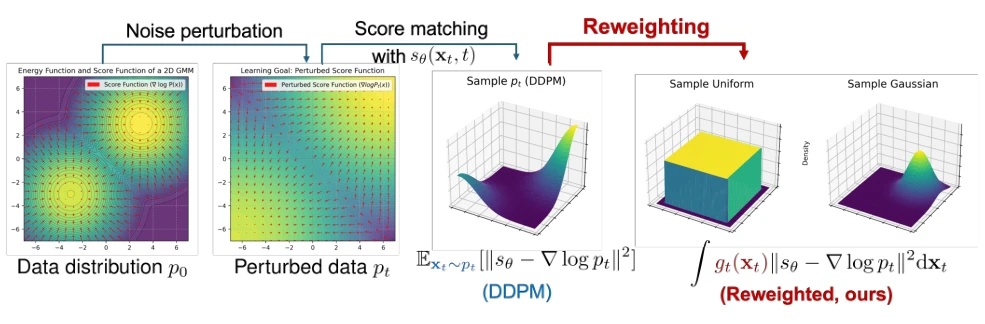
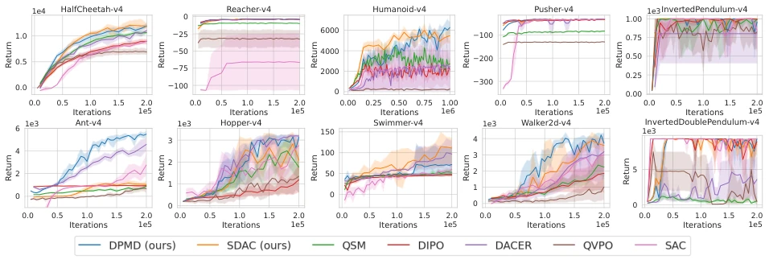
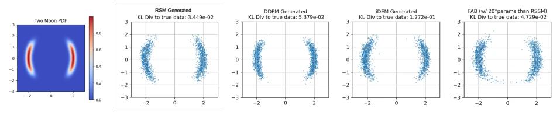

扩散策略凭借强大的表达能力和多模态特性，在模仿学习和离线RL中表现优异，但在在线RL中却面临两大死结。首先，传统的去噪分数匹配（Denoising Score Matching, DSM）需要采样自目标分布，而在在线RL中，最优策略是未知的，无法直接采样，导致DSM不可行。其次，若试图通过反向扩散过程反向传播策略梯度（如Wang et al., 2024），计算成本极高且极不稳定，难以扩展。现有尝试如QSM (Psenka et al., 2023) 通过微分Q函数获取分数，但分数估计不准；QVPO (Ding et al., 2024a) 无法处理负Q值；DACER (Wang et al., 2024) 则因递归梯度导致梯度不稳定。这些方法要么有偏差，要么计算昂贵，限制了扩散策略在在线RL中的潜力。本文旨在解决这一核心矛盾，提出一种无需采样自目标分布且计算高效的训练方法。
—

Figure 1. Diffusion model aims to match score network sθ(xt, t) with noise-perturbed score function ∇xt log pt(xt) by minimizing the expectation of error L2-norm ∥sθ(xt, t) −∇xt log pt(xt)∥2 over distribution pt. RSM generalize to other weight function gt to enable diffusion policy training in online RL.
Figure 2. The scatter plots of generating 2D Gaussian mixture, the histograms show the partition on each axis. Figure 2(a) shows the true data samples with mixing coefficients [0.8, 0.2]. Figures 2(b) to 2(d) show that the proposed reweighted score matching and denoising score matching can approximately recover the true data distribution. Figure 2(e) shows the slow mixing of Langevin dynamics that the mixing coefficients can not be correctly recovered.

Figure 3. Average return over 20 evaluation episodes every 25k iterations (125k for Humanoid) during training. We select the top 5 baselines ranked by average performance over all tasks for clarity. The error bars are standard deviations over 5 random seeds.
其他图片Other Figures

Figure 5. Results to Fit Two Moon distribution, a commonly used Boltzmann sampler benchmark. We compare RSM, DDPM, iDEM, and FAB. RSM, DDPM, and iDEM all recover two separate modes, while FAB shows connections between the two modes.